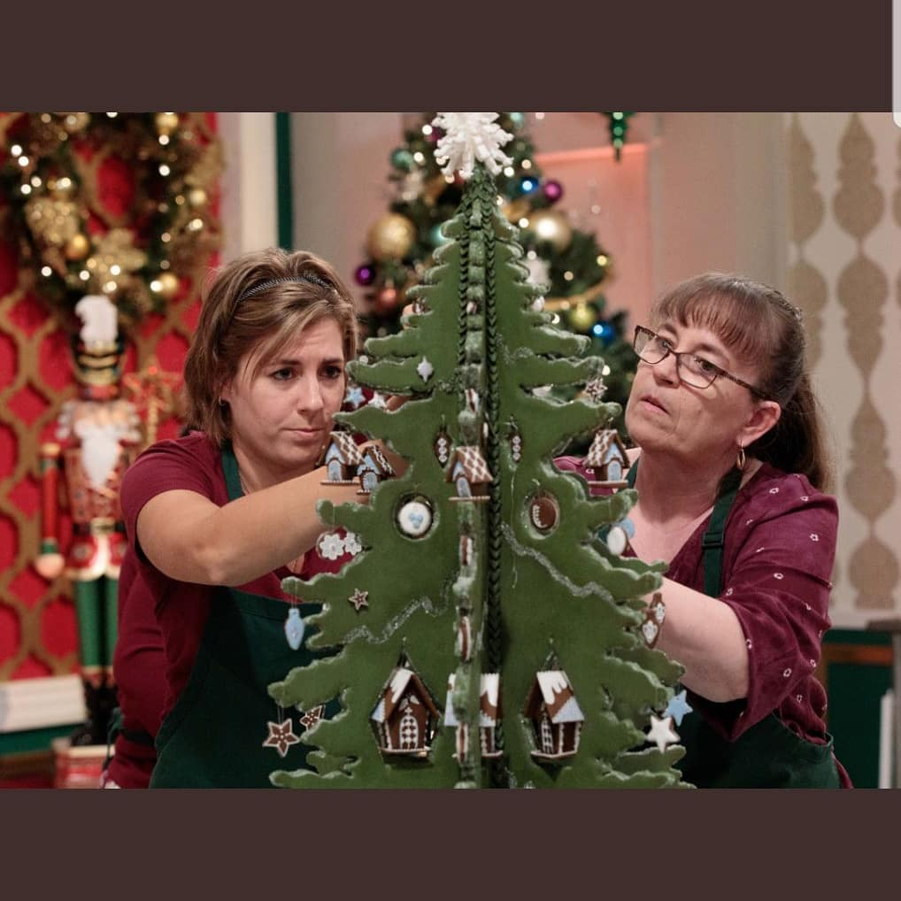
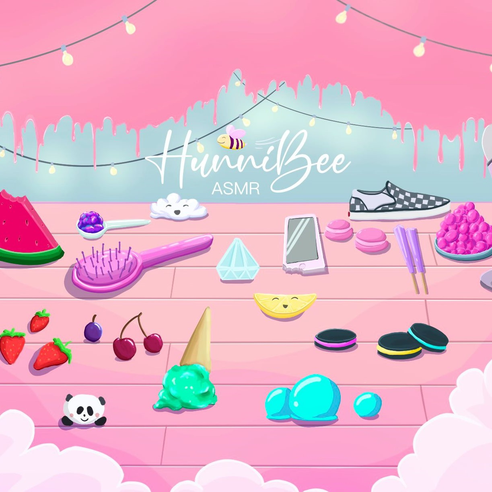
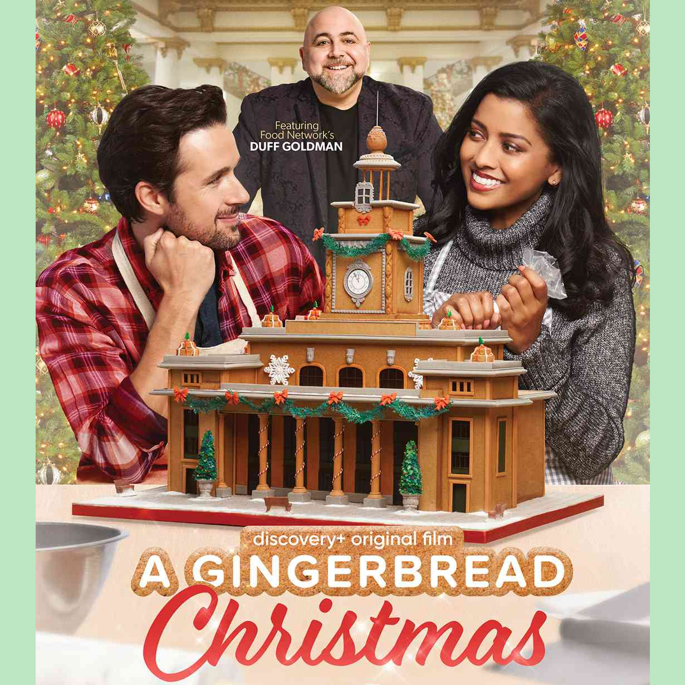

Holiday Gingerbread
Showdown
Holiday Gingerbread
Showdown

©Food
Network
In 2018, Gisella assisted Gingerbread Artist Beatriz Muller in winning the grand prize in the first season of Holiday Gingerbread Showdown!
The Big Bake
 ©Food Network
©Food Network
In 2021, Gisella assisted Beatriz Muller once more, this time on season 2 of The Big Bake, to bring home the grand prize!
 HunniBee ASMR
HunniBee ASMR

©HunniBee ASMR
From 2020 to 2022, Gisella created all of the edible treats for HunniBee ASMR's YouTube videos. During that time, HunniBee accumulated 8 Million subscribers.
A Gingerbread Christmas
 ©Discovery PlusGisella worked on the gingerbread pieces featured in the movie A Gingerbread Christmas 2022 as a part of the Gingerneers team.